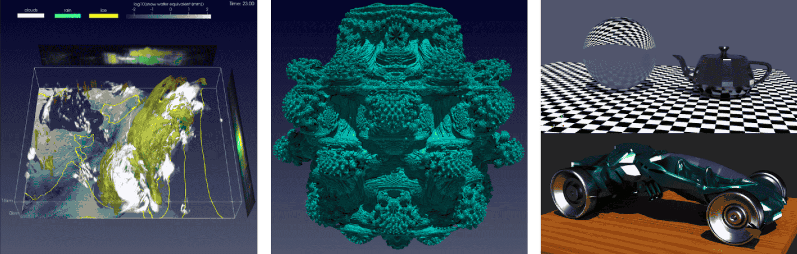
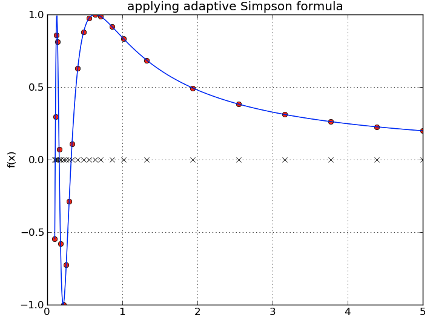
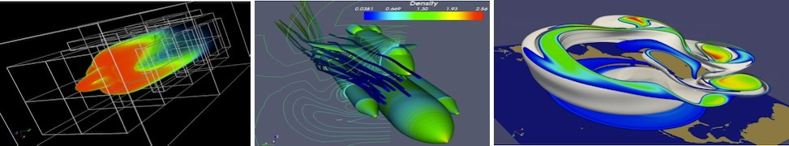
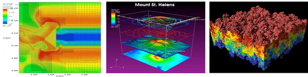

Introduction#
Équipe nationale de visualisation#
L’Alliance de recherche numérique du Canada offre non seulement des ressources de calcul et de stockage à la communauté de la recherche, mais aussi des formations et du soutien pour une utilisation efficace des ressources. Et l’une des équipes de soutien se spécialise particulièrement en visualisation scientifique.
Documentation de l’Alliance : https://docs.alliancecan.ca/wiki/Visualization/fr
Site Web externe : https://ccvis.netlify.app
Compétitions de visualisation :
Visualize This, de 2016 à 2023
IEEE SciVis, en 2021
{kind=link}

Visualisation scientifique de données définies dans l’espace#
C’est le processus permettant l’analyse de données sous une forme visuelle.
Il est plus facile de comprendre des images que de grands ensembles de nombres.
Cela permet d’explorer interactivement des données, de déboguer une analyse et de communiquer avec les pairs.
Domaine de recherche |
Données à visualiser |
|---|---|
Mécanique des fluides |
Écoulements 2D/3D, densité, température, traceurs |
Climat, météorologie, océanographie, intérieurs planétaires |
Fluides dynamiques, nuages, chimie, etc. |
Astrophysique, de la formation des galaxies et des étoiles à l’hydrodynamique stellaire |
Fluides 2D/3D, données particulaires, champ de rayonnement ≤6D, champs magnétiques, champs gravitationnels |
Chimie quantique |
Fonctions d’onde 3D |
Dynamique moléculaire (physique, chimie, biologie) |
Particules (atomes, molécules) |
Bioinformatique |
Réseaux, arbres, séquences |
Imagerie médicale |
IRM, CT scans, ultrason, données temporelles |
Systèmes d’information géographique |
Altitude, rivières, villes, routes, strates, etc. |
Sciences humaines et sociales |
Données abstraites, ou l’un des types ci-dessus |
Traçage 1D/2D vs visualisation multi-dimensionnelle#
Quelles sont les différences entre le traçage de graphiques 1D/2D et la visualisation 2D/3D?
Traçage 1D/2D |
Visualisation 2D/3D |
|---|---|
Créer des graphiques de données typiquement tabulaires |
Afficher des ensembles de données multi-dimensionnelles, c’est-à-dire des données sur des grilles structurées (uniformes et multi-résolution) ou non structurées (selon une certaine topologie en 2D/3D) |
Jusqu’à quelques milliers de valeurs à la fois |
Données potentiellement très massives (millions ou milliards de points) |
Création généralement rapide sur un ordinateur |
Le rendu est souvent lourd sur CPU et/ou GPU |
Interaction optionelle pour comprendre les données |
Besoin d’interagir en 3D, d’appliquer des filtres pour extraire des informations |
Bibliothèques fortement recommandées en Python : Matplotlib, Seaborn, Plotly, Bokeh, Altair, Plotnine, Holoviews. Bibliothèque recommandée en R : ggplot2. Pour des graphes (réseaux) : Gephi. |
(Nous verrons les deux outils les plus populaires dans les prochaines sections) |
Voici des exemples de traçages 1D/2D :
1D : les valeurs dépendantes \(y = f(x)\) ne sont que des valeurs associées aux coordonnées 1D selon \((x,)\).
{kind=link}

2D : les couleurs ou les intensités de gradients sont associées aux coordonnées 2D selon \((x,y)\).
{kind=link}
Alors que plusieurs des outils mentionnés ci-haut permettent de générer ces deux figures 1D/2D, que devrait-on utiliser pour faire de la visualization 3D?
Outils de visualisation multi-dimensionnelle#
D’emblée, il vaut mieux éviter les outils propriétaires, sauf s’il y a un réel avantage (probablement pas). Voici pourquoi :
Coûte une grande quantité d’argent à l’achat initial.
La license peut imposer des limitations sur l’endroit où l’outil peut être utilisé, sur quel type de machine ou de plateforme, etc.
La communauté utilisatrice est généralement plus petite que pour les outils à source ouvert, et il est plus difficile d’obtenir de l’aide.
Une fois que vous commencez à accumuler des scripts, vous vous retrouvez contraint d’utiliser ces outils et, par conséquent, de payer régulièrement de l’argent.
La visualisation en 3D apporte son lot de particularités :
Plus difficile à naviguer.
Plusieurs champs superposées \(\Rightarrow\) besoin de visualiser par couches et d’utiliser des filtres interactifs.
Données massives \(\Rightarrow\) temps de traitement plus long \(\Rightarrow\) traitement distribué ou GPU.
L’outil de visualisation 3D doit avoir les caractéristiques suivantes :
Code source ouvert + multi-plateforme (Linux/MacOS/Windows) + usage général.
Pouvoir visualiser des champs scalaires et vectoriels.
Prise en charge de données sur des maillages structurés et non structurés en 2D et en 3D, sur des particules, des polygones, des topologies irrégulières ou des maillages à multi-résolution.
Capacité à traiter de très grands ensembles de données (de Go à To), jusqu’à \(10^{\sim 12}\) éléments.
Pouvoir utiliser la puissance des grappes de calcul (jusqu’à \(10^3-10^5\) coeurs CPU par tâche).
Prise en charge des formats de données les plus courants, lecture et écriture en parallèle.
Manipulations interactives via l’interface graphique et automatisation via des scripts Python.
ParaView et VisIt#
Depuis le début des années 2000, les deux outils conformes les plus populaires sont ParaView (~85%) et VisIt (~15%).

Collaboration lancée en 2000 entre Los Alamos NL et Kitware Inc., rejointe plus tard par Sandia NL et d’autres partenaires ; première version publique en 2002.
Développé pour visualiser des données très volumineuses sur des machines à mémoire distribuée.
Utilise MPI pour le parallélisme à mémoire distribuée sur les grappes de calcul.
Prend en charge plus de 130 formats de fichiers différents.
Basé sur VTK (Visualization Toolkit) :
Développés par les mêmes auteurs.
ParaView = Interface graphique sur les classes C++ de VTK.
Large écosystème d’outils : Web, in-situ, Cinema.
Dernière version suggérée : 6.1.1

Première version en automne 2002.
Développé pour visualiser des résultats de simulations à l’échelle du téraoctet.
Utilise MPI pour le parallélisme à mémoire distribuée sur les grappes de calcul.
Plus de 80 fonctionnalités de visualisation (contour, maillage, coupe, volume, molécule, …)
Prend en charge plus de 110 formats de fichiers différents.
Intégration complète avec la bibliothèque VTK.
Plus petit écosystème.
Dernière version suggérée : 3.4.2
Pourquoi ParaView pour cet atelier?#
Il fallait faire un choix.
Les binaires de ParaView et de VisIt sont largement disponibles et leur développement est toujours actif.
Les deux permettent la visualisation client-serveur à distance et offrent une excellente scalabilité.
Cependant, ParaView et VisIt ont une interface très différente.
ParaView est fortement intégré avec VTK (mêmes développeurs) et peut lire davantage de formats de données en entrée.
Un certain nombre de projets complémentaires :
vtk.js est une bibliothèque de rendu scientifique pour le Web (WebGL autonome, aucun rendu sur serveur).
ParaView Glance est une application Web permettant la visualisation scientifique 3D directement dans le navigateur.
ParaView Cinema permet la visualisation interactive d’images pré-rendues (rotation, panoramique, zoom, activation/désactivation de variables).
Trame est une plateforme Web de tableaux de bord 3D. Elle se connecte à un serveur distant doté d’une interface Python utilisant ParaView et VTK pour générer des visualisations 3D interactives.
Le serveur distant exécute du code Python et retourne des widgets interactifs (VTK, vtk.js, ParaView Python, Matplotlib, Plotly, etc.) qui s’affichent dans votre navigateur.
Trame constitue donc un remplaçant moderne de ParaViewWeb (une ancienne bibliothèque JavaScript).
Catalyst2 est une bibliothèque de visualisation in situ utilisable à même votre code de simulation ; intéraction via des scripts ParaView.
L’équipe nationale de visualisation offre aussi d’autres formations sur VisIt.